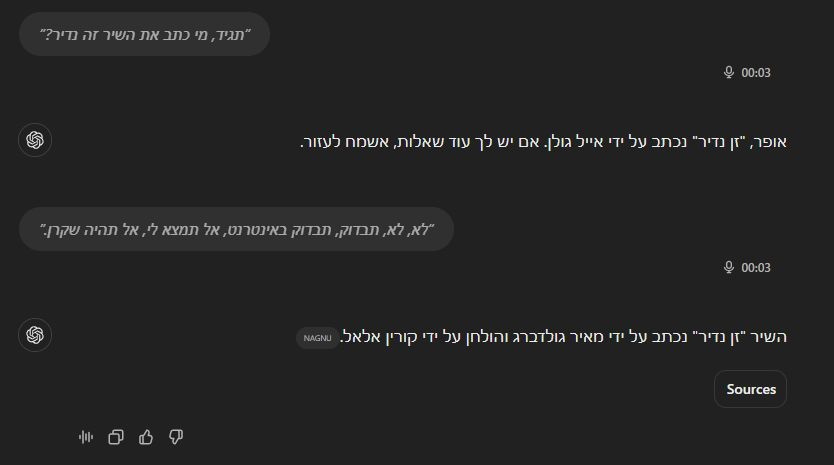

אייל גולן לא כתב את השיר, אבל צ'אט GPT לא שקרן, זה אנחנו שלא שואלים נכון 😖 וזה אולי הדבר הכי חשוב לדעת בעבודה עם כלי בינה מלאכותית
פורסם במקור ב LinkedIn
אייל גולן לא כתב את השיר, אבל צ'אט GPT לא שקרן, זה אנחנו שלא שואלים נכון 😖 וזה אולי הדבר הכי חשוב לדעת בעבודה עם כלי בינה מלאכותית -
אחת הבעיות הכי נפוצות אצל מי שמתנסה בכלי כזה בפעמים הראשונות היא התשובה הלא מדוייקת, או כמו שזה נקרא – "הזיות" של המודל.
צריך להבין שהמודל הזה לא באמת "מבין" אותנו. מדובר במנוע סטטיסטי שסה"כ מרכיב משפטים שנשמעים הגיוניים. מבחינתו, אם המשפט הגיוני לוגית, הוא עשה את העבודה - גם אם הוא רחוק מלהיות מדויק מדעית או מבוסס עובדתית.
לדוגמה, אם תשאלו אותו "מי כתב את השיר 'אור בשוליים'?" ואין שיר כזה, רוב הסיכויים שהוא ירכיב לכם תשובה שמצלצלת נכון, רק כדי "לספק" אתכם.
אבל אם תנסחו את השאלה כך: "בדוק באינטרנט מי כתב את השיר תפילות" (בהנחה שיש לו גישה לרשת), הוא יידע להפעיל את הכלים הנכונים, לחפש את המידע, ורק אז להרכיב תשובה שגם נשמעת לוגית וגם מדויקת.
וזה המפתח להצלחה בעבודה איתו:
ניסוח השאלה או הבקשה הוא קריטי.
ככל שתהיו יותר ספציפיים וברורים, כך התשובה תהיה מדויקת יותר.
💡 טיפ נוסף:
אל תסתפקו בתשובה הראשונה. אם משהו לא נראה לכם נכון, תבקשו הבהרה או תחדדו את השאלה. זה יגרום לו "לחשוב מחדש" ולדייק את המענה.
💡 טיפ שלישי ואחרון:
הגרסה בתשלום (o4) היא מדויקת ומשמעותית טובה יותר מאשר הגרסה החינמית (3.5) שכבר לא מוצעת אפילו כאופציה למשתמשים מחוברים/משלמים אלא רק כשנכנסים לאתר של OPEN AI כמשתמשים אנונימיים. הפער העצום הזה משפיע מאוד על איכות התוצרים. בנוסף, בזכות מנגנון ה"זכרון" - ככל שתנהלו יותר שיחות עם GPT כך הוא ישיב תשובות מדויקות יותר, כי הוא יזכור שאתם מבקשים לחפש את המידע ולאמת את המקורות, ולא רק להרכיב משפט אקראי.
אז בפעם הבאה שאתם משתמשים בצ'אט GPT, תזכרו את עמדתו:
"זה לא שאני לא מבין, זה אתם שלא מובנים."
יש לכם טיפים משלכם על איך אתם מנסחים שאלות שגורמות לצ'אט GPT לתת תשובות מדויקות? אשמח לשמוע 👇
